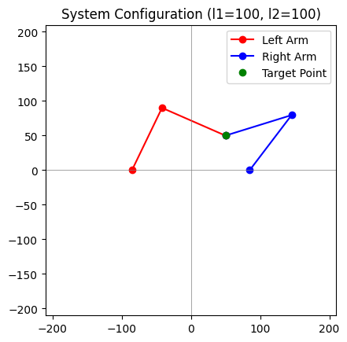
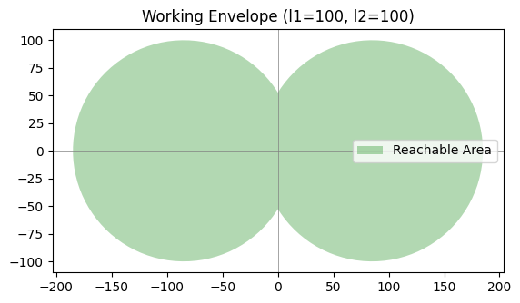

import numpy as np
import matplotlib.pyplot as plt
# Constants
d = 170 # Distance between the two servo bases in mm
def inverse_kinematics_arm(x, y, l1, l2, offset, prefer_elbow_up=True):
# Shift the target point according to the base offset
x = x - offset
# Calculate distance from the base to the target point
D = np.sqrt(x**2 + y**2)
if D > (l1 + l2):
raise ValueError("The target point is out of reach for this arm!")
# Angle for the second section of the arm (elbow joint)
cos_theta2 = (D**2 - l1**2 - l2**2) / (2 * l1 * l2)
theta2 = np.arccos(cos_theta2) # This is the "elbow up" solution
# Prefer elbow up by default, flip for elbow down if needed
if not prefer_elbow_up:
theta2 = -theta2
# Angle for the first section of the arm (shoulder joint)
k1 = l1 + l2 * np.cos(theta2)
k2 = l2 * np.sin(theta2)
theta1 = np.arctan2(y, x) - np.arctan2(k2, k1)
return np.degrees(theta1), np.degrees(theta2)
# Forward Kinematics for each arm
def forward_kinematics_arm(theta1, theta2, l1, l2, offset):
# Convert angles to radians
theta1 = np.radians(theta1)
theta2 = np.radians(theta2)
# Position of the first section's end (relative to the base)
x1 = offset + l1 * np.cos(theta1)
y1 = l1 * np.sin(theta1)
# Position of the second section's end (end-effector position)
x2 = x1 + l2 * np.cos(theta1 + theta2)
y2 = y1 + l2 * np.sin(theta1 + theta2)
return [offset, x1, x2], [0, y1, y2]
# Visualization of the whole system
def visualize_system(x, y, l1, l2, prefer_elbow_up=True):
# Calculate angles for both arms with elbow preference
theta1_left, theta2_left = inverse_kinematics_arm(x, y, l1, l2, -d/2, not prefer_elbow_up)
theta1_right, theta2_right = inverse_kinematics_arm(x, y, l1, l2, d/2, prefer_elbow_up)
# Get the points for both arms using forward kinematics
x_points_left, y_points_left = forward_kinematics_arm(theta1_left, theta2_left, l1, l2, -d/2)
x_points_right, y_points_right = forward_kinematics_arm(theta1_right, theta2_right, l1, l2, d/2)
# Plot both arms
plt.plot(x_points_left, y_points_left, 'ro-', label='Left Arm')
plt.plot(x_points_right, y_points_right, 'bo-', label='Right Arm')
plt.plot([x], [y], 'go', label='Target Point')
plt.xlim(-l1-l2-10, l1+l2+10)
plt.ylim(-l1-l2-10, l1+l2+10)
plt.axhline(0, color='gray', lw=0.5)
plt.axvline(0, color='gray', lw=0.5)
plt.gca().set_aspect('equal', adjustable='box')
plt.legend()
plt.title(f'System Configuration (l1={l1}, l2={l2})')
plt.show()
# Working Envelope for two arms
def plot_working_envelope(l1, l2):
theta_range = np.linspace(0, 2*np.pi, 100)
# Envelope for the left arm
x_reach_left = l1 * np.cos(theta_range) + (-d/2)
y_reach_left = l1 * np.sin(theta_range)
# Envelope for the right arm
x_reach_right = l1 * np.cos(theta_range) + (d/2)
y_reach_right = l1 * np.sin(theta_range)
plt.fill(np.concatenate([x_reach_left, x_reach_right]),
np.concatenate([y_reach_left, y_reach_right]), 'green', alpha=0.3, label='Reachable Area')
plt.axhline(0, color='gray', lw=0.5)
plt.axvline(0, color='gray', lw=0.5)
plt.gca().set_aspect('equal', adjustable='box')
plt.title(f'Working Envelope (l1={l1}, l2={l2})')
plt.legend()
plt.show()
# Example usage
l1, l2 = 100, 100 # Length of the arm sections
x, y = 50, 50 # Target position
# Visualize the system
visualize_system(x, y, l1, l2)
# Plot the working envelope
plot_working_envelope(l1, l2)
